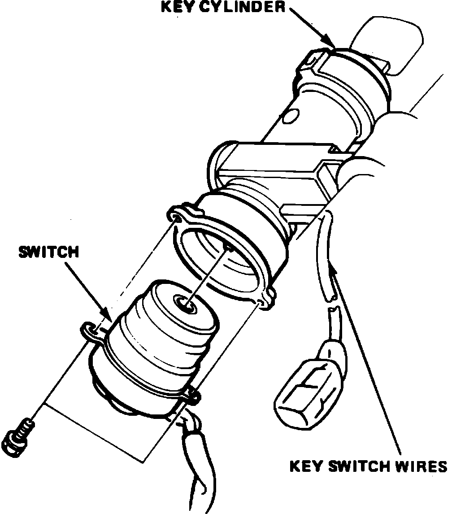

Ignition Switch: Service and Repair
Fig. 13 Ignition switch replacement (Typical):

1. Disable coded theft protection system as described under Accessories and Optional Equipment / Antitheft and Alarm Systems / Service and Repair.
2. On models equipped with airbag, disarm airbag system as described under Air Bags and Seat Belts / Air Bags (Supplemental Restraint Systems) / Airbag System Disarming.
3. Remove steering column lower panel and cover.
4. Disconnect electrical connector from switch.
5. Insert ignition key and move switch to ``0'' position.
6. Unfasten switch wires, then remove switch attaching bolts and the switch, Fig. 2.
7. Reverse procedure to install.
8. Restore coded theft protection system and rearm airbag.